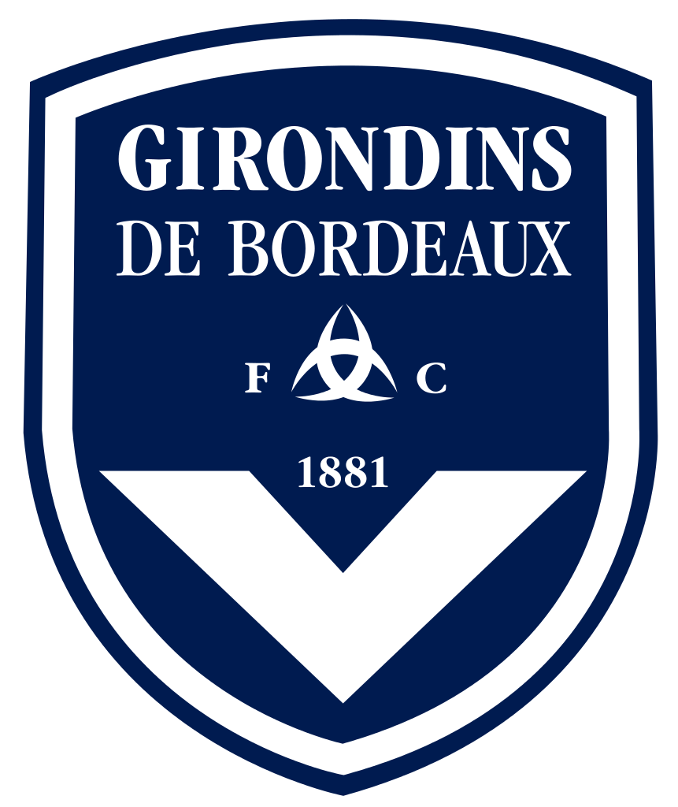
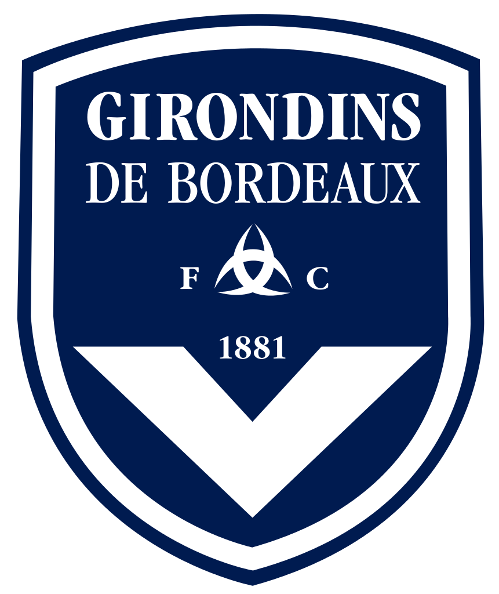

Présentation


Je m'appelle Loïc Roger, j'ai 21 ans et je suis né le 20 Juillet 1997 à Arès (33). J'ai quitté ma vie sur
Metz pour m'installer sur Nancy, afin de pouvoir intégrer l'école d'Epitech. En effet, c'était une grande
opportunité pour moi de rejoindre cette équipe et de pouvoir enfin m'épanouir totalement dans un domaine.
Pour plus d'informations, n'hésitez surtout pas à télécherger mon CV sur ce lien.


 
